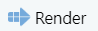
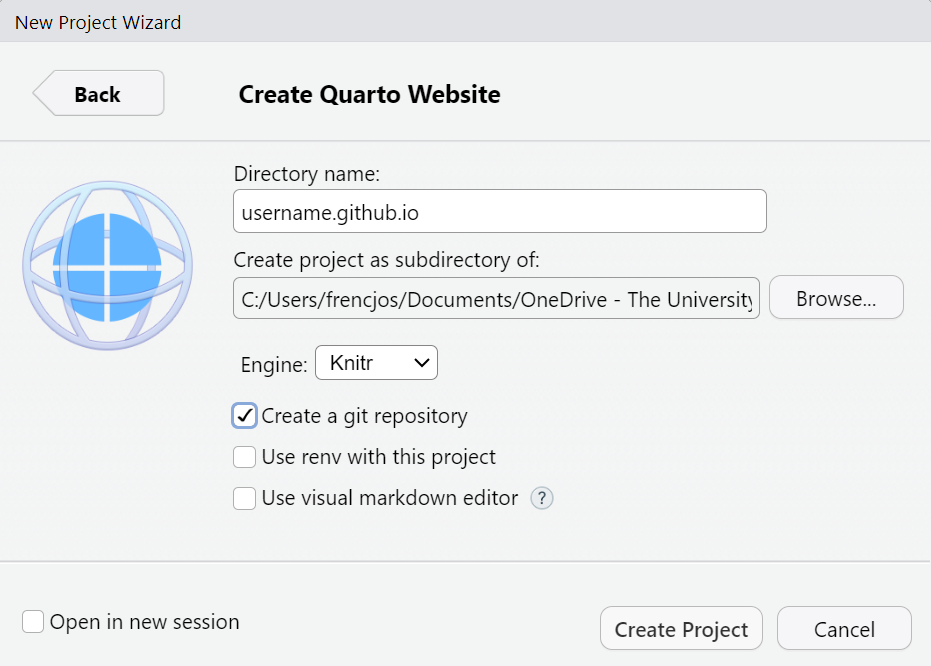
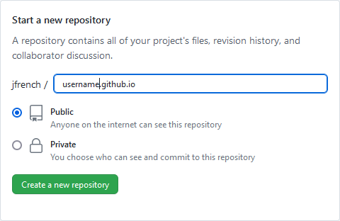
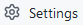
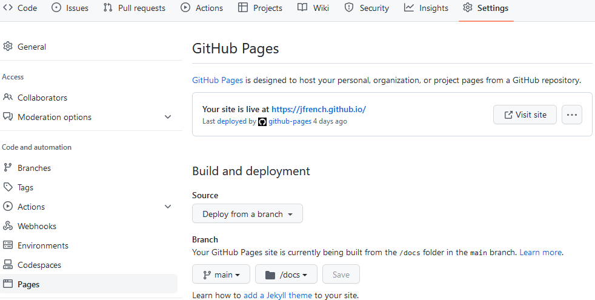
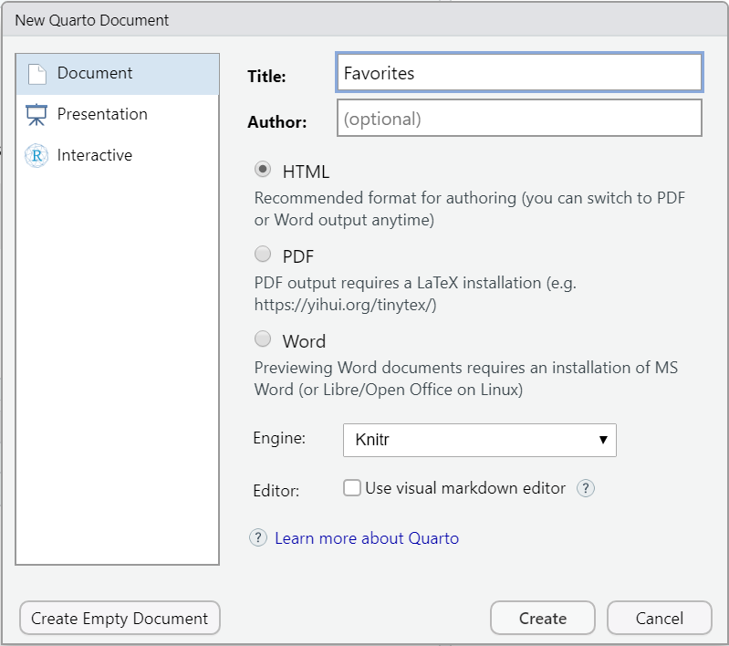
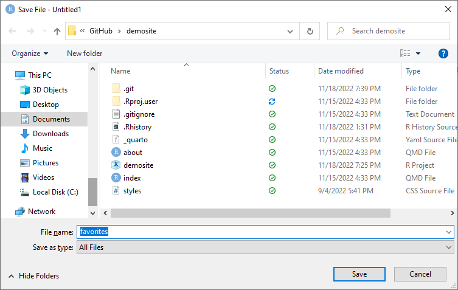

Creating websites using Quarto and GitHub Pages
Many data scientists have a website to market themselves. This is helpful for distinguishing yourself from competitors by showcasing who you are and what you’ve done.
It is very easy to create a personal webpage using Quarto websites and GitHub. We will walk through the process of creating a very simple professional website that you can further customize to suit your own needs.
What is git?

Software developers need a fast, reliable way of tracking changes to their source code when working as individuals or as part of a team.
The best-in-class approach to software version control is git, which was created by Linus Torvalds in 2005 to improve on the version control applications available at the time.
From https://git-scm.com/:
Git is a free and open source distributed version control system designed to handle everything from small to very large projects with speed and efficiency.
By default, git tracks files changed in a directory or respository locally, i.e., on our actual computer, which can create some potential challenges:
- git does not backup your code or changes, which could potentially be problematic.
- A centralized repository must be available when multiple contributors are working on the same project. There needs to be a way of easily managing each person’s contributions and keeping track of the development and stable branches of the code.
GitHub provides one of the most population solutions for these two issues.
What is GitHub?


GitHub (https://www.github.com) is an online platform for hosting git repositories. Additionally, it makes it easy to:
- Control who is able to access and change a repository
- Track bugs in our code
- Keep record of feature requests
- Delegate responsibilities
- Maintain a wiki
- etc.
GitHub is a great place to:
- Backup and maintain version control of your software.
- Make your software public and allow others to contribute and interact with your work.
- Put project repositories to demonstrate your coding skills and abilities.
- Host a professional website that advertises to potential employers or clients about how wonderful you are.
What is Quarto?
The Quarto website (https://quarto.org/docs/faq/) states:
Quarto is an open-source scientific and technical publishing system built on Pandoc. You can weave together narrative text and code to produce elegantly formatted output as documents, web pages, blog posts, books and more.
More helpfully, Quarto is the spiritual successor to R Markdown that was built from the ground up to be compatible with:
- R
- Python
- Julia
- Observable JavaScript
Quarto’s development is sponsored by Posit (https://posit.co/), which was formally known as R Studio.
You can use Quarto to create:
- Technical documents
- Books
- Blogs
- Websites
If you have successfully produced material using R Markdown, then you should feel at home producing materials using Quarto (and may want to shift future content production to Quarto documents).
The R Markdown ecosystem was very mature when the decision to develop Quarto was made, so Quarto is designed to better integrate the various document types, options, and customization available in R Markdown. Essentially, Quarto attempts to take the strengths of R Markdown while correcting some of its weaknesses.
Quarto documents can be edited in:
- R Studio (my favorite)
- VS Code
- JupyterLab
- Any text editor.
R Studio provides the most feature-rich environment for creating Quarto documents.
To open a new Quarto document in R Studio:
- From the File menu click File → New File → Quarto Document.
- Make the appropriate changes.
- Click the Create button.
Click the Render button, , to render the default Quarto document.
Initializing the default Quarto website
The initial step to creating a Quarto website is to create a new Quarto website project. In R Studio:
From the File menu, click File → New Project.
Select New Directory → Quarto website.
Choose a Directory name.
- Your GitHub-hosted personal website will have an address like
https://username.github.io, while a website associated with a project will have the addresshttps://username.github.io/name, whereusernameis your GitHub username andnameis the name of the GitHub repository for the website. - If the hosted website will be
https://username.github.io, then choose the directory name to beusername.github.io. - If the hosted website will be
https://username.github.io/name/, then for simplicity, choose the directory name to bename.
- Your GitHub-hosted personal website will have an address like
Choose where you want the directory to be located.
Knitr is a suitable option for the rendering engine.
Regarding the check boxes, I’d recommend
- Checking the box next to “Create a git repository”. Since we will be hosting the website on GitHub, you want to do this. If you are hosting your website elsewhere, then you can probably uncheck this box.
- Uncheck the boxes next to “Use renv with this project”. renv is a package for project-local R dependency management. Unless you’re running completed R code on your webpages, then this isn’t needed
- Uncheck “Use visual markdown editor”. The visual markdown editor provides standard word processor like interface to your project. For me, this causes more problems than it solves, so I don’t use this. You may have a different preference.
Click “Create Project”.
See Figure 1 for the recommended choices.

After clicking “Create Project”, a new project will be created in the specified directory with the following files:
_quarto.yml: a YAML header that control certain aspects of the website like the main title of the site, the pages included in the site, and the theme (color scheme) of the site..gitignore: a file that contains files and directories that git isn’t supposed to track.index.qmd: the file that controls the default home page for your website.about.qmd: a file that’s supposed to add a page to your website with information about you. This is really an optional file.*.Rproj: the R project file associated with your website. Open this to reopen your R Studio workspace.styles.css: a file to create custom styles for use on your website.
The available files are enough to create an initial version of your website.
Click the Render button, , to render the default Quarto website.
A complete description of available website options is available at https://quarto.org/docs/reference/projects/websites.html.
To host your Quarto website using GitHub pages, you will need to change the output directory of your project. We discuss that next.
Changing the output directory of a Quarto website
The output directory is where Quarto saves the files for the rendered website.
To host your Quarto website using GitHub pages, it is best to change the output directory to “docs”.
To change the output directory of your Quarto website:
- Go to the
_quarto.ymlfile - Add the line
output-dir: docsundertype: website
That part of your _quarto.yml file will look something like the code below.
project:
type: website
output-dir: docsAfter making this change:
- Navigate back to
index.qmd - Click the Render button,
The “docs” folder will now appear in the Files pane.
You are now ready to push your website to GitHub so that it can be rendered using GitHub Pages.
What is GitHub Pages?
GitHub Pages (https://pages.github.com/) is a feature of GitHub that allows you to host websites for you and your projects.
The websites are hosted directly from your GitHub repository, meaning that you can:
- Keep a git repository of your website
- Push changes of your website to GitHub
- See the changed website almost instantly on GitHub.
If your GitHub username is username and your website is contained in the demosite respository, then your rendered website will be https://username.github.io/demosite/.
- The rendered website for this tutorial is available at https://jfrench.github.io/demosite.
- The rendered website for my in-progress open education resource (OER) book on linear regression is available at https://jfrench.github.io/LinearRegression.
If you are creating a personal website, then it is best to host it as https://username.github.io.
To begin this process:
- Log in to GitHub.
- From the main page, create a GitHub repository.
- For your personal website, the repository name should be
username.github.io. Obviously, replaceusernamewith your actual user name). Figure 2 displays an example of this. - For a project website, use the name of the project directory. As previously mentioned, I use “demosite” for the website we create.
- For your personal website, the repository name should be

After creating your website:
- Push the changes to the repository your want to be hosted by GitHub pages. If you’re not familiar with doing this manually, then you can literally copy the contents of your project directory to GitHub.
- On GitHub.com, navigate to your website’s repository.
- Click on the Settings button, .
- On the Navigation bar, click “Pages”.
- If you’ve set the output directory for your website to “docs” (which you should), then toggle the “/(root)” option to “/docs” and click the “Save” button. Figure 3 demonstrates this.

In a few minutes, you should see the initial version of your website at https://username.github.io or https://username.github.io/name depending on the type of site you created.
Changing the main title of a Quarto website
The main title of a Quarto website is controlled through the _quarto.yml file.
Specifically, find the section of _quarto.yml where it has:
website:
title: "demosite"Change “demosite” (or whatever title you have) to whatever you wish. For your personal website, it makes sense to use something like:
- “First name Last name”, e.g., Langston Hughes”
- “First name Middle initial Last name”, e.g., Amy R. Tan”
- Your brand identity, e.g., “Assistant to the Regional Data Manager”
Change the title to something you prefer and click the Render button, , to render a Quarto website with a custom title.
Adding or removing a page from a Quarto website
Pages can easily be added or removed from a Quarto website.
To add a new page to your website, add a new Quarto document to your project folder:
- Click File → New File → Quarto Document …
- Enter the desired page Title in the Title box of the New Quarto Document window.
- Click the Create Empty Document button in the lower left corner of the window.
- Press
Ctrl + s(Windows) orCmd + s(Mac) to bring up the Save File window. - Name your file and click the Save button.
Figure 4 displays the New Quarto Document window you would have to create a new Quarto document with the title “Favorites”.

Figure 5 shows the Save File window you would use to create favorites.qmd.

favorites.qmd.Now you can add the desired content to your new Quarto document. We will add the following text to favorites.qmd.
## Favorite dog breeds
- Shetland Sheepdog
- Golden Retriever
- Labrador
## Favorite characters from the Lord of the Rings movies
- Samwise Gamgee
- Legolas
- AragornTo add the “Favorites” page to our website, we open the _quarto.yml file and navigate to the navbar section where .qmd files are listed are a dash. We add a new row with - favorites.qmd as in the code below.
navbar:
left:
- href: index.qmd
text: Home
- about.qmd
- favorites.qmdTo remove a page from your Quarto website, simply delete its line from the navbar section. Don’t remove the index.qmd row unless you want to break your website.
Navigate to a .qmd file and click the Render button, , to render the Quarto website that now has added a new page.
Changing the color and style theme of a Quarto website
Themes can be used to change the default color and style themes of a Quarto website.
Quarto provides over 20 themes “out of the box”. Some of the best are:
Quarto includes 25 themes from the Bootswatch project (for example, the website uses the cosmo theme). Some of my favorite themes include:
- journal
- lux
- quartz
- simplex
- spacelab
A complete list of themes is available at https://quarto.org/docs/output-formats/html-themes.html#overview.
To get a taste of theme customization, let’s change the theme of a Quarto website to “sandstone”. We update the theme option of the _quarto.yml file to sandstone using the code below.
format:
html:
theme: sandstoneTheme options can be used to customize a theme and set the default choice for the entire document. These include:
mainfont: the default font-familyfontsize: the default font-sizefontcolor: the default text colorlinkcolor: the default color for hyperlinksmonofont: the default font-family for codebackgroundcolor: the default background color for the entire document.
A more detailed discussion of theme customization can be found at https://quarto.org/docs/output-formats/html-themes.html.
Quarto font sizes can be specified using many different units.
- Absolute units like pt, cm, mm, in, pc, etc. are not recommended.
- Relative units like em or rem are better. 1em is equivalent to the default font size for body text. So 3em is 3 times as big as the body font. rem, which stands for root em, is the font size of the root element of the document, which is consistent throughout the document.
Quarto website colors are specified in hexadecimal format. The website https://htmlcolorcodes.com/ is a handy tool for determining hexadecimal values to make font or background color changes.
We now customize:
- The main font of the website
- The standard font size
- The standard font color
- The color of hyperlinks
- The font used for code.
using the code below.
theme: sandstone
mainfont: arial
fontsize: 1.5rem
fontcolor: #0013d5
linkcolor: #ff33f0
monofont: courier newNavigate to a .qmd file and click the Render button, , to render the Quarto website that now has added a new page.
Using a Quarto website “about” template
Each page in a Quarto website is rendered from qmd files you place in the project directory.
While Quarto is naturally great for building technical documents, on the surface, it is not great for building a snazzy website.
An about template can be used to create a page with a specific default structure. These templates are designed to help website readers learn “about” you.
- Using an about template will change the page’s structure.
- An about template is specified in the YAML header of the
.qmdfile you want to customize.
Currently, Quarto has 5 built in templates that are discussed in more detail at https://quarto.org/docs/websites/website-about.html#templates.
The current templates are:
jollatrestlessolanamarqueebroadside
A preview of each template is available at https://quarto.org/docs/websites/website-about.html#templates.
Each template allows you to add the following elements:
image: an image you want to display on the page. This could be a picture of yourself or something else you want the page to display. You can customize the image in two ways:image-width: A valid CSS width for your image.image-shape: The shape of the image.- The shape options are:
rectangle,rounded,round. - Shape options are only available for the jolla, solana, and trestles templates.
- The shape options are:
links: links you want to provide for the user to click on. These could be links to your GitHub page, email address, Twitch account etc. The links have the following options:href: a link to a file contained with the project or an external URL.text: the text to display for the link (if not provided, the default is the document title).icon: the name of one of the standard Bootstrap 5 icons (e.g. “envelope”, “github”, “twitter”, “youtube”, etc.).aria-label: accessible label for the navigation item.
- Partial page content: this is text on your page that doesn’t have the same formatting as the rest of the template.
- Specify the
idoption underaboutto indicate the keyword to start the partial page content. - Include the desired partial page content between
:::{#id-name}and:::, whereid-nameis the name specified for theidoption.
- Specify the
Personally, I like to use an about template on the home page of my website, not on a separate “About” page. Obviously, that is up to you.
You will need to add three files to your project directory to complete the example below. You can:
- Manually download the files from my GitHub page at https://github.com/jfrench/DataWrangleViz/tree/master/data.
- Download the files by directly clicking the file names below.
Add the following three files to your project directory:
{kind=link}
{kind=link}
In the example below, we will replace the contents of index.qmd with the code below.
---
title: "Assistant to the Regional Data Manager"
image: mypic.png
about:
id: ppc
template: trestles
image-shape: round
image-width: 15em
links:
- text: Email
icon: envelope
href: mailto:noreply@email.zz
- text: GitHub
icon: github
href: https://github.com/
- text: YouTube
icon: youtube
href: https://youtube.com/
- text: Scholar
icon: google
href: https://scholar.google.com/
- text: resume
icon: file-text
href: resume.pdf
---
:::{#ppc}
I love my dogs. Here is a picture of my dogs.

If you like dogs too, then you should definitely hire me for
a highly paid position.
:::Click the Render button, , to render the Quarto website.
Linking to a file on a Quarto website
Linking to a file in a Quarto website is slightly more complicated than linking to a URL.
Notice that resume.pdf on the demosite isn’t available. It isn’t available because it is not in the docs folder used to render the website. (You can verify this by navigating to the docs older in the Files pane of R Studio). There are two options to correct this:
- Manually copy
resume.pdfto the docs folder. Don’t do this. - Add the line
resources: resume.pdfto your YAML header. This tells Quarto to copy this file to your docs folder when rendering the website. This is the best approach.
In the code below, we wedge resources: resume.pdf between the image and about options.
image: mypic.png
resources: resume.pdf
about:Click the Render button, , to render the Quarto website with a corrected file link to resume.pdf.